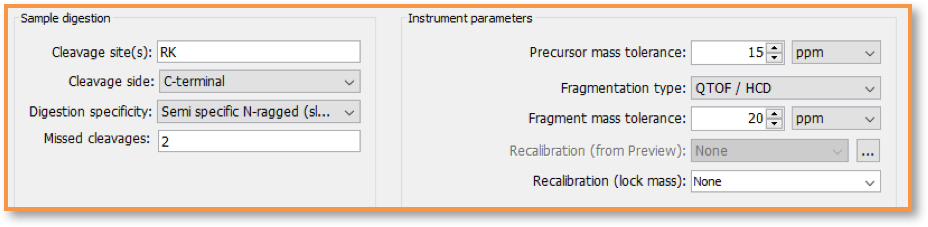

Technical Note¶
Host Cell Protein (HCP) Analysis¶
K. Ilker Sen, St John Skilton, Marshall Bern, Chris Becker, Eric Carlson Protein Metrics Inc. www.proteinmetrics.com January 2018
Introduction¶
The reporting of Host Cell Proteins (HCPs) is covered under a number of biopharmaceutical regulations around the world. The discovery, analysis, and monitoring of HCPs by mass spectrometry (MS) appears to be an important trend in the biopharmaceutical industry as instrumentation and sample preparation techniques improve. This Technical Note introduces the use of Byonic™ and Byologic® as companion tools to determine HCPs from MS/MS data. Starting parameters and conditions for a search for Host Cell Proteins, and other types of protein contaminants, are provided.
Benefits summary¶
- Optimizing Byonic™ search parameters for HCP analysis
- Quantify HCPs based on Extracted Ion Chromatogram (XIC) using Byologic®
- Producing a report
- Statistical analysis of replicates
